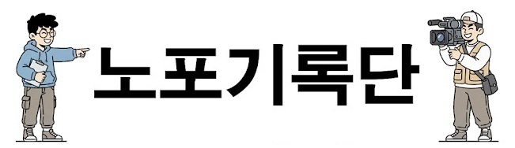

활성화 지원사업
노포기록단 AI 특강 3
그리고 CapCut으로 영상 제작까지
노포 홍보 숏폼 제작 & 스마트 AI 실습 로드맵 🎯
복잡한 이론은 빼고, 당장 실전에 활용하는 핵심 AI 도구들을 직접 마스터합니다.
초강력 기획 프롬프트로 촬영한 노포(태극당) 3장짜리 슬라이드 카드뉴스 구조 및 핵심 자막을 즉석에서 기획합니다.
Suno AI를 활용하여 세상에 단 하나뿐인 전용 감성 BGM을 다운로드합니다.
이어서 실전 퀄리티를 폭발시킬 4대 치트키 팁을 배웁니다.
실습 과정 세부 시간표 (총 120분)
2시간 만에 자료 기획부터 작곡, 스마트폰 숏폼 편집까지 완주하는 최고의 스마트 러닝 타임라인
"재료 준비부터 요리까지,
AI와 함께 최고의 콘텐츠를 만듭니다"
생성형 AI 기술은 우리의 창작을 방해하는 기술이 아닌, 강력한 날개를 달아줄 지휘봉입니다.
"AI와 함께하는 두 시간의 기적! 오늘 우리는 우리 동네 노포의 숨은 이야기를 발굴해 멋진 홍보 영상을 만드는 과정을 배웁니다.
노트북LM으로 자료를 모아서 이미지 만들고, 제미나이로 음악을 기획해서, 수노에서 작곡을 하고, 캡컷으로 버무릴 겁니다. 복잡해 보이지만 한 단계씩 따라 하시면 누구나 감독이 될 수 있습니다. 자, 바로 첫
번째 단계로 넘어가 볼까요?"
- Google Gemini: 고품격 이미지 분석 & 음악 연출 매니징
- Suno AI: 저작권 100% 안전한 연주 BGM 무한 작곡(구독자)
- CapCut: 3초 자동 자막 생성 및 초간단 모바일 컷편집
과정1: 노트북LM으로 노포 자료 정리 및 슬라이드 기획
70년 전통의 추억의 빵집 '태극당'의 방대한 역사를 3장짜리 알짜 숏폼 구성안으로 압축 정리합니다.
"노트북LM을 켜주세요. 여러분이 직접 촬영해 오신 노포에 대한 정보나, 인터넷에서 찾은 기사 글을 복사해서 [소스 추가]에 넣어줍니다.
자료가 입력되었다면 대화창에 잠시 후 보여드릴 프롬프트를 그대로 입력해 보세요. 영상의 뼈대와 시각 자료 아이디어를 AI가 순식간에 만들어 줄 겁니다."
- 세월이 흘러도 변치 않는 단팥빵, 야채사라다빵, 모나카 아이스크림의 헤리티지 가치
- 신구(新舊)가 조화되는 레트로 인테리어와 아날로그 서체 감성
- 목표: 3장의 슬라이드(오프닝 훅 - 본론 - 엔딩) 구조화
실습 ① 노트북LM 노포 슬라이드 기획 프롬프트
아래의 정교하게 튜닝된 프롬프트를 복사하여 노트북LM에 바로 넣어 최상의 결과물을 도출합니다.
과정2: 제미나이(Gemini) 음악 기획 & 5가지 스타일
제미나이의 놀라운 미디어 비전 안목을 활용하여 노포의 시각적 분위기에 어울리는 음악 프롬프트를 확보합니다.
"다음은 영상의 감성을 지배하는 음악을 기획할 차례입니다. 구글 제미나이(Gemini) 창을 열어주세요.
그리고 여러분이 준비한 노포 사진이나 짧은 영상 파일을 업로드 버튼을 눌러 넣어줍니다. 그다음, 이 사진의 분위기에 맞춰 무려 '5가지 다른 맛'의 음악 프롬프트를 만들어 달라고 제미나이에게
요청하겠습니다."
2. 레트로 & 경쾌함 (Retro Jazz)
3. 따뜻함 & 잔잔함 (Warm Folk Acoustic)
4. 현대적 & 차분함 (Modern Chill Lofi Slow Jam)
5. 감동적 & 웅장함 (Cinematic Orchestral)
실습 ② 제미나이 미디어 업로드용 프롬프트
노포 이미지 파일을 구글 제미나이에 직접 끌어넣은 후 아래 프롬프트를 실행해 영어 작곡 코드를 뽑아냅니다.
"gentle acoustic guitar, slow upright piano, warm, emotional, 75bpm, instrumental" 등 5가지
스타일별 쉼표 구분 단어를 제공하면, 이 중 수강생 본인의 노포 무드에 가장 가슴 울리는 1가지를 선정하여 복사하게 유도합니다.
과정3: 수노(Suno)에서 감성 배경음악 생성하기
제미나이가 다채롭게 추출해 준 오리지널 영문 프롬프트를 이용해 1분 만에 완벽한 BGM 음원을 생산합니다.
"제미나이가 추천해 준 5가지 음악 스타일 중 여러분이 원하는 느낌 하나를 골라 영어 단어들을 복사하세요.
이제 음악을 실제 완성된 선율로 연주해 줄 '수노(Suno.com)' 플랫폼으로 다 함께 가보겠습니다. 코드 입력법과 필수 활성화 설정 단축키를 안내합니다."
- 표절 시비 없는 오리지널 멜로디 구조 생성
- 텍스트 입력 단 1분 만에 각기 다른 매력을 가진 2종의 대안 곡 동시 생성
- 세션 악기의 깊이가 다른 하이엔드 수준 음질
실습 ③ 수노(Suno) 6단계 작곡 가이드
마우스를 차례대로 조작해 에러 없는 완벽한 연주곡 배경음악을 렌더링하고 다운로드합니다.
과정4: CapCut 숏폼 몰입 유도 황금 3막 구조
기본 준비된 영상 소스들을 캡컷 타임라인에 올리고 15~20초 분량의 숏폼 예술작품으로 다듬어 냅니다.
"스토리 기획안, 고화질 사진, Suno로 만든 멋진 오리지널 배경음악까지 모든 재료가 주방에 깔렸습니다. 이제 캡컷으로 맛있게 요리할 시간입니다.
화면 구성과 편집 템포를 지배하는 '숏폼 황금 3막 4단계' 기법을 머릿속에 기억하세요. 누구나 스마트폰 터치 몇 번으로 전문가가 될 수 있습니다."
- 2막. 본론 스토리 (3~15초): "세월이 빚어낸 따뜻한 빵집. 손님들의 웃음이 효모가 되었습니다." 조리 모습 및 단골 손님 컷.
- 3막. 엔딩 클로징 (15~20초): 상호 간판 제시 및 "더 자세한 정보는 아래 본문에!" 행동 촉구(Call to Action).
실습 ④ 캡컷(CapCut) 4단계 영상 조립법
타임라인 화면에 에셋을 정렬하고 유기적으로 결합하는 모바일 실전 핵심 4단계 동작입니다.
실습 ⑤ 자막 가독성 스타일링 & 오디오 믹싱
자막의 시각적 안정성과 목소리-배경음악 간의 이상적인 소리 비율을 튜닝하는 기법입니다.
100% ~ 130%로 명확하게 확대- Suno BGM 배경음악 볼륨:
15% ~ 20%로 은은하게 다운에이징- 효과: 목소리는 귓가에 정밀하게 꽂히고, 멜로디는 아련한 감정선을 안정적으로 받쳐줍니다.
- 테두리 획(Stroke): 두께
12로 설정하여 흰 글씨 외곽선에 검은 음영 부여- 화면 배치: 쇼츠/릴스 하단 아이콘에 가리지 않도록 화면 중앙 하단보다 약간 위에 포지셔닝!
실습 ⑥ 노포 영상 제작 치트키 (유용한 팁 1~2)
강의 수료 이후에도 집에 돌아가
개인 영상을 고급스럽게 업그레이드할 수 있는 비밀 팁입니다.
링크는 padlet에 있습니다.
배달의민족 한나체, 네이버 나눔스퀘어, 프리텐다드 등 다양하고 아름다운 무료 서체를 자유롭게 내려받아 캡컷에 직접 심어 쓸 수 있어 저작권 공포에서 완전히 해방됩니다.
내가 입력한 한글 태극당 아카이브 자료를 바탕으로, AI가 마치 실제 전문 아나운서 두 명이 라디오 토크쇼를 진행하듯 생생하게 대담을 나눕니다. 이 고품격 영문 대담 파일을 캡컷 영상 배경에 얇게 깔아주면 즉석에서 '글로벌 고품격 다큐멘터리' 분위기가 연출됩니다.
실습 ⑦ 노포 영상 제작 치트키 (유용한 팁 3~4)
AI 서비스 사용 크레딧을 절약하고, 시청자가 영상을 다 본 후 아쉬움을 남기게 하는 마무리 음향 연출 요령입니다.
무작정 생성 버튼을 누르면 크레딧이 금방 소진되므로, 2과정 제미나이가 뽑아준 5종의 다채로운 프롬프트 중 본인의 기획에 가장 부합하는 1~2개 장르만 신중히 골라 생성을 누르는 훈련을 통해 실습 효율을 300% 이상 극대화할 수 있습니다.
캡컷 타임라인에서 BGM 오디오 클립을 가볍게 터치하고 [페이드] 메뉴에 들어가 보세요. '페이드 아웃(Fade Out)' 시간을 약 1.5초~2초 정도로 셋팅하면, 영상이 스크롤되어 넘어가기 전 음악 소리가 스르륵 작아지며 깊은 여운을 남깁니다.
활성화 지원사업
수고하셨습니다!
스마트 기기와 첨단 AI 날개를 달고 세상과 더 뜨겁게 울려 퍼집니다.
